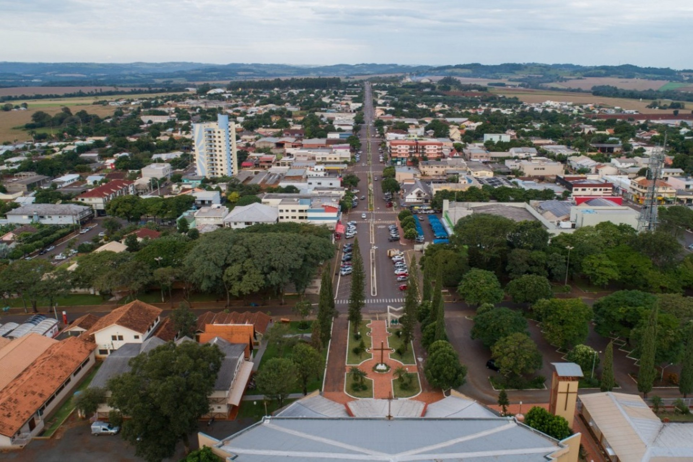
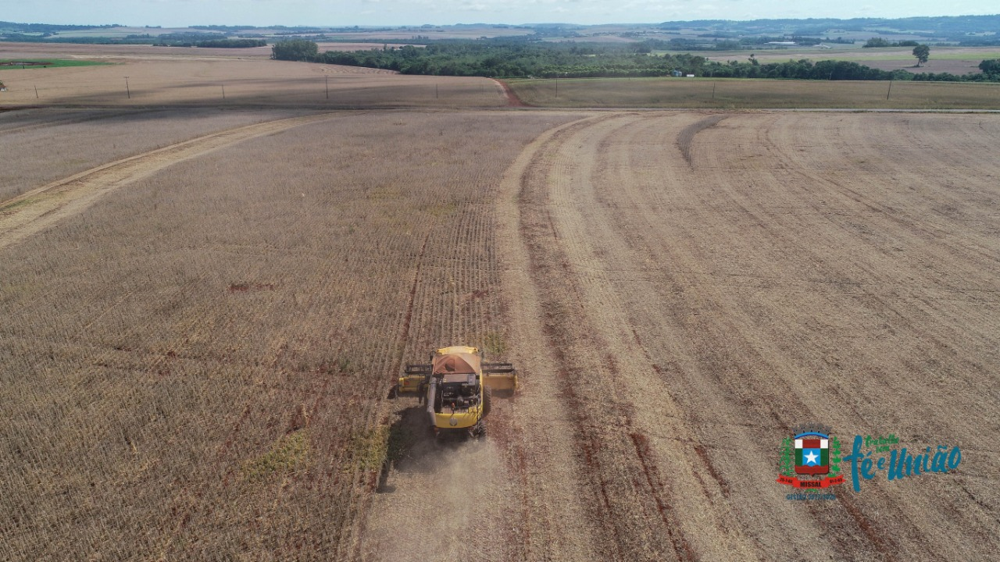
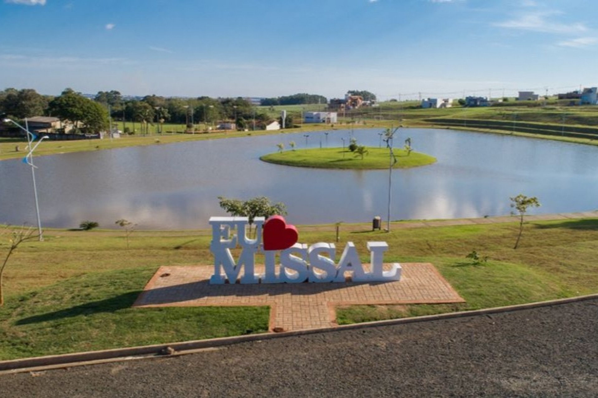

A agricultura tem papel fundamental no desenvolvimento de Missal, contribuindo para a produção de alimentos e para a economia local.
A suinocultura e a avicultura são atividades importantes para o município, gerando empregos e fortalecendo o setor agropecuário.
Muitas famílias participam da produção rural, ajudando a manter tradições, fortalecer a comunidade e impulsionar a economia.
O uso de novas tecnologias e práticas sustentáveis contribui para aumentar a produtividade e preservar os recursos naturais.
Espaço reservado para imagens da cidade, da agricultura e das paisagens locais.


